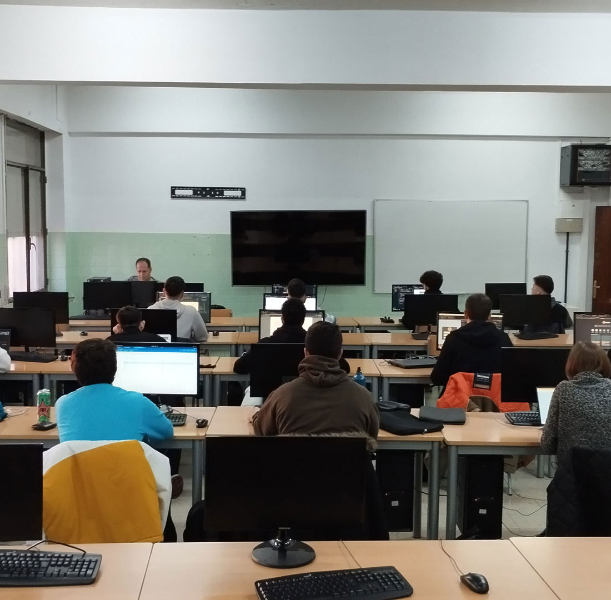
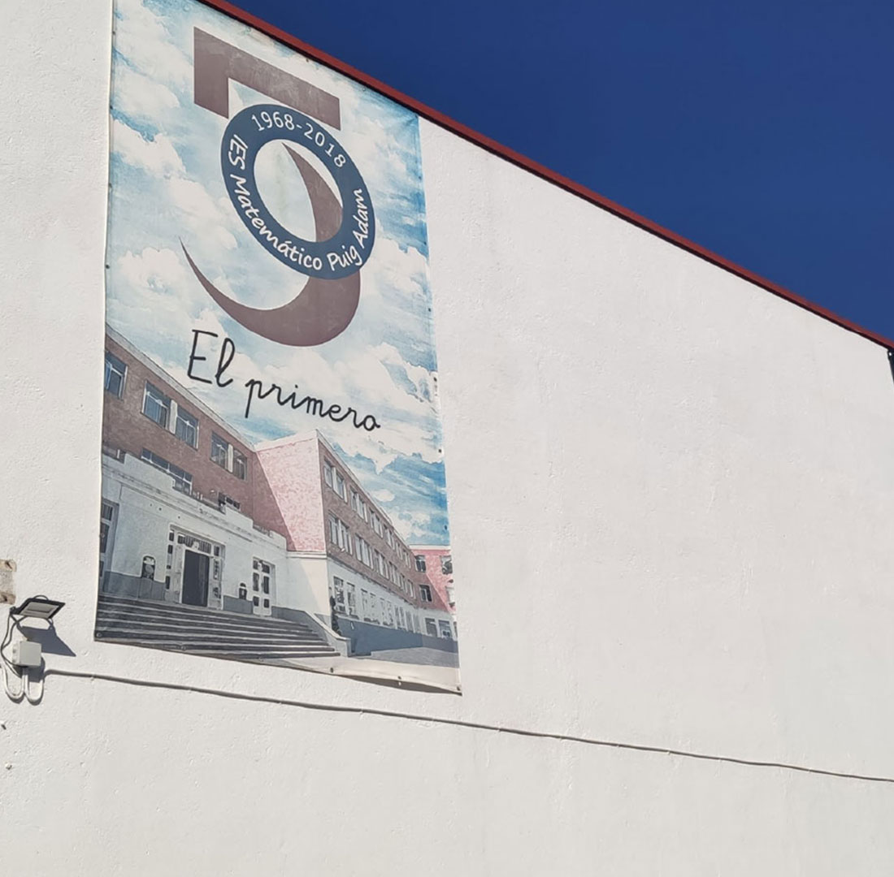
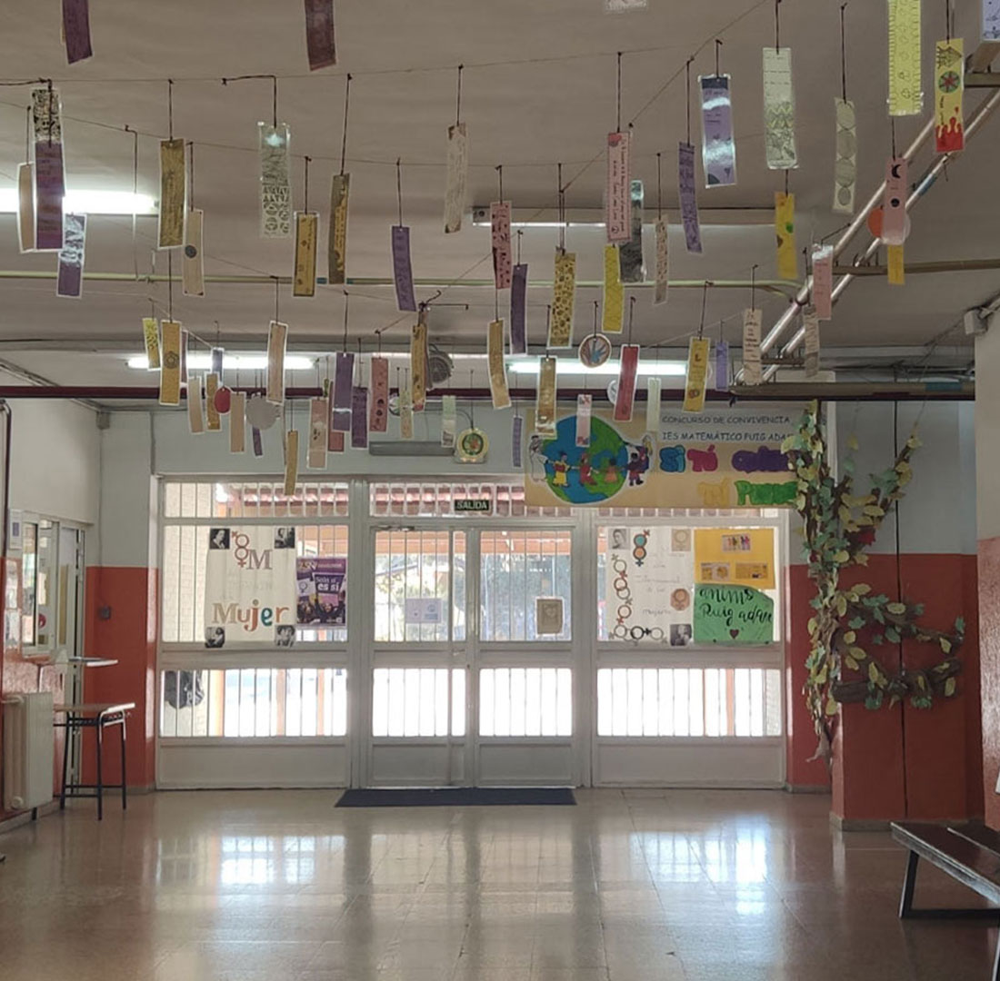

Historia
El primer instituto creado en Getafe. Comenzó su andadura en el curso 1968-1969 como Instituto Nacional de Enseñanza Media Mixto. En 1978 pasó a denominarse I.B. Matemático Puig Adam como homenaje al ilustre matemático. Finalmente adoptó la denominación de IES Matemático Puig Adam el curso 1995-1996 con la entrada en vigor de la LOGSE.
Reforma de 1990
Tras la reforma educativa de 1990, el antiguo colegio público San Isidro pasó a formar parte del IES Matemático Puig Adam y, desde entonces, alberga las aulas De 1º Y 2º ESO.
Es un Centro docente de titularidad pública, sostenido con fondos públicos y administrado por la Comunidad Educativa en el marco de lo establecido en la legislación vigente.
El centro imparte enseñanzas de Nocturno desde el año 1985 y desde 1990 el turno Nocturno imparte únicamente Bachillerato. El curso 2020-2021 han comenzado las enseñanzas de Desarrollo de Aplicaciones Web de Ciclo Formativo de Grado Superior.